Creating a Sketch
The first sketch we're going to make of the table
is its plan view. A plan view is usually
made as though we were looking down on the object from above. Of
course, terms like "down" and "above" are totally
arbitrary in mechanical drawing. In general they mean what you'd
expect them to, but to give them a more concrete definition, a plan
view (also called the top view) is the
view of an object in the first octant of a three-dimensional
Cartesian coordinate system as seen when looking in the direction of
the negative Z axis. Additionally, the direction of gravitational
attraction is taken be in the negative Z axis direction. The figure
below shows the projection of the top of the object on the sketch
plane.
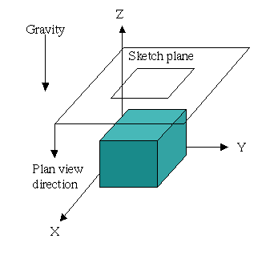
Our plan view is going to be very simple. We're
only going to draw the outline of the top of the table. To do this,
go to the Tools menu
and select Rectangle.
When you move the mouse cursor into the main graphics display window,
you'll see that it has an indication that we're in rectangle creation
mode ().
Create the rectangle by pressing the left mouse button when the mouse
is in the main graphics display window and dragging the mouse (with
the button held down) until the rectangle is approximately
20" by 20" square and then release the left mouse button.
You should have something similar to the figure below.
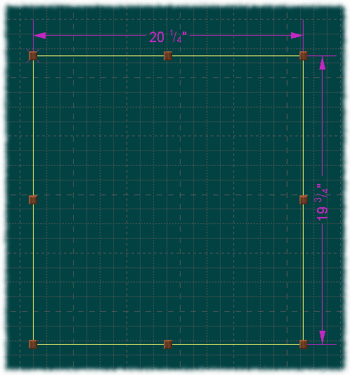
Although this operation is simple, there a few
things to observe:
When you enter rectangle creation mode, the
user interface status area of the status line indicates the mode
with the text "Construct Rectangle". Both the cursor and
the user interface status area return to normal after the rectangle
is complete.
As you drag out the rectangle, dimension
lines are drawn to indicate its current size. Do not be concerned
about creating a rectangle which is exactly 20" by 20". It
is very easy to adjust the size of a rectangle after it is created.
Similarly, do not be concerned about the grid lines on the sketch.
The actual position of the rectangle on the page is unimportant.
(The grid lines will be more useful when there are objects other
than rectangles to create.)
After releasing the mouse button, the
rectangle is activated. In this state, the rectangle is drawn with
highlighted edges and eight resize handles. (They're supposed to
look like little blocks of wood.) Hover the mouse cursor over each
block and the cursor will change to indicate the direction in which
the rectangle can be resized. Press and hold the left mouse button
over a resize handle and you can reshape the rectangle. Clicking
(away from a resize handle) and dragging an edge will cause the
rectangle to move. If you click somewhere in the window but not on
the rectangle itself, the rectangle will be deactivated. Here is a
short table of cursor types and their meaning.
|
Cursor
|
Meaning
|
|
|
When hovering over an edge, dragging will move
the entity.
When over the background of the page, dragging
will pan the page.
|
|
|
Resize horizontal edge vertically.
|
|
|
Resize vertical edge horizontally.
|
|

|
Resize adjacent vertical and horizontal edges
diagonally up and to the right or down and to the left.
|
|
|
Resize adjacent vertical and horizontal edges
diagonally up and to the left or down and to the right.
|
Notice that one corner of the rectangle has
an X under it. This is the origin of the rectangle. Ordinarily, the
origin is not of interest to the user; however, certain resizing
operations on the whole rectangle will move the corner opposite of
the origin.
If you botched the rectangle by releasing the
mouse button too soon and ended up with a 0" by 0"
rectangle, you can simply undo the rectangle creation command. You
can either choose the menu option Edit|Undo,
click the Undo tool
bar button, or press Ctrl+Z.
Alternatively, if the rectangle is still activated, you can delete
it with the menu option Edit|Cut,
or by clicking the Cut
tool or by pressing Ctrl+X.
Finally, if you picked the wrong Tools
menu option altogether, you can press Escape
to cancel the operation. Escape
works both before you press the left mouse button to start the drag
and during the drag.
There are no (theoretical) limits on the size
of the page. You can pan (scroll) the page by pressing and dragging
the left mouse button. You can also zoom in and out by using the
mouse wheel. There are also equivalent keyboard inputs.
|
View Action
|
Mouse
|
Keyboard
|
|
Pan left
|
Left button drag left
|
Left
arrow key
|
|
Pan right
|
Left button drag right
|
Right
arrow key
|
|
Pan up
|
Left button drag up
|
Up
arrow key
|
|
Pan down
|
Left button drag down
|
Down
arrow key
|
|
Zoom out
|
Wheel up
|
Page
Up
|
|
Zoom in
|
Wheel down
|
Page
Down
|
(Note that these commands are for the
two-dimensional pages. The three-dimensional pages have different
bindings.)
To return to the default view orientation, press
and hold the right mouse button in the main window. This will bring
up the context menu for the current page.
Select Restore View
to return to the default view. The context menu for a Sketch page is
show below.
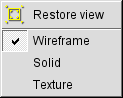
Note that there are three other
toggle buttons in the Sketch context menu: Wireframe,
Solid and Texture.
These choices select the default drawing style for geometry on the
current page. The default mode is wireframe, equivalent to drawing
the outline of an object. Solid draws geometry as filled polygons
using the same color as the wireframe. Texture is just a simple
gloss on solid which draws filled polygons using a default texture
map. (No attempt at realism is made in this case.)
The final size of our top is actually 19 ½"
by 16". Point the mouse at the dimension value on the width
dimension at the top of the rectangle. You will notice that the
dimension value, the dimension's arrows and its extension lines will
be highlighted. Additionally, two square, translucent resize handles
will be highlighted. Because the dimension has not been activated
yet, the resize handles are not active yet. Double click on the
dimension; this will bring up the dimension information dialog.
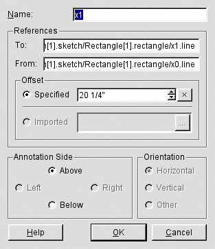
This dialog shows us all the detail of the
dimension. Its name is x1;
that is, it is the dimension between the two edges of the rectangle,
x0
and x1.
It has a specified size of 20 1/4". It is Above
its reference edge (i.e., above the top edge of the rectangle). It
has a horizontal orientation.
Adjust the specified offset to 19 ½".
You can do this by clicking the arrow buttons in the Specified
spin box or by typing in the input field. Note that to type this
dimension, you must type 19b1/2
(that is, literally, "1"
"9"
"Space"
"1"
"/"
"2";
lignumCAD will take care of the units
abbreviation). (Note that it is also OK to type 19.5.)
Apply your change by pressing Enter
(or clicking OK).
Modify the height dimension to 16" in the
same way.
Next, double click on the rectangle itself. This
will bring up the rectangle's information dialog.
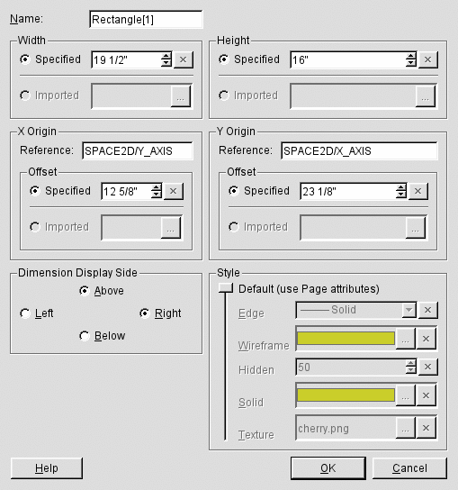
There is a lot to see here (and a rectangle seems
so simple!). You can see the dimension values which we changed
earlier. You can also see where the origin of the rectangle is
located (in this case at the Cartesian coordinate (12 5/8",
23 1/8")). The dimensions are on the Above/Right sides of
the rectangle and the rectangle is drawn in the default style. For
now, we just want to change the name of the rectangle to Top.
So, navigate to the Name
field (try pressing Alt+N),
type in Top
and press Enter
(or click OK) to
apply the change.
Next, we want to add a text message to the page to
serve as a reminder of what this object is. Select the
Tools|Annotation
menu option. The mouse cursor will become the create annotation
cursor ().
Click and drag out a small box below the top's rectangle. When you
release the mouse, the annotation information dialog will appear.
Navigate to the main text box and enter Top.
The annotation information dialog will let you modify the style of
the text if you choose.
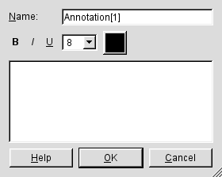
Applying the text styles works in the
usual way. If you select some text and then change the property
widgets (e.g., click Bold),
the new properties will be assigned to the text. If no text is
selected and you change a property, then any subsequent typed text
will have that property. To complete the annotation, click OK
or press Alt+O
(this is one of the places where just pressing Enter
will not dismiss the dialog). If you made your annotation box too
small, you can resize it with the resize handles. You can also click
anywhere inside the annotation to drag it around.
So, we've completed the creation of the plan view
of our table. Now would be a good time to save the model. You can
either select the File|Save
menu option, click the Save
tool button, or press Ctrl+S.
Next, we want to work on the front view of the
table. This is usually called an elevation.
To create a new Sketch, you can can do one of three things:
Select the menu option Insert|Sketch.
I'd call this the usual way.
Use the Insert
Sketch button on the toolbar:
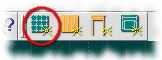.
Use the context menu on the tab bar (press
and hold the right mouse button anywhere on the page tab bar) and
select Sketch. The
tab bar context menu is shown below.
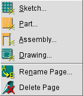
Note that from the menu tab bar context
menu, you can create a new page of any type. You can also rename the
page and delete a page. Note that both the Rename
Page and the Delete
Page options apply to the currently displayed page, not
the one whose tab might have happened to be under mouse when the menu
was invoked. These options are also available from the Edit
menu.
After you create the new Sketch, name it Front
Elevation.
On the Front
Elevation page, create a rectangle near the top
of the window and set its size to 19 ½” by ¾”
and set its name to Top.
The is the side view of the table top. [In a
later version of lignumCAD,
you will be able to reference the width of the Top
figure on the Plan
sketch; for now, you have to enter the width again.]
Next, we want to create a rectangle for the left
leg for the table. In creating the rectangle, we want to take several
criteria into account. First, the top of the leg should be flush with
the bottom edge of the top. Second, we want the left edge of the left
leg to be offset from the left edge of the top. These requirements
are called constraints in lignumCAD.
The program can describe both of these constraints. To create such a
constrained rectangle, activate the Rectangle tool and position the
mouse cursor along the bottom edge of the top and near the left side.
The bottom edge of the top should be highlighted: it will be colored
a brighter color than the rest of the rectangle and translucent
resize handles will appear at the ends of the edge.
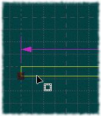
Press the left mouse button and drag
out the rectangle. lignumCAD will now
create three dimensions for the rectangle: the width, the height and
the offset from the left edge.
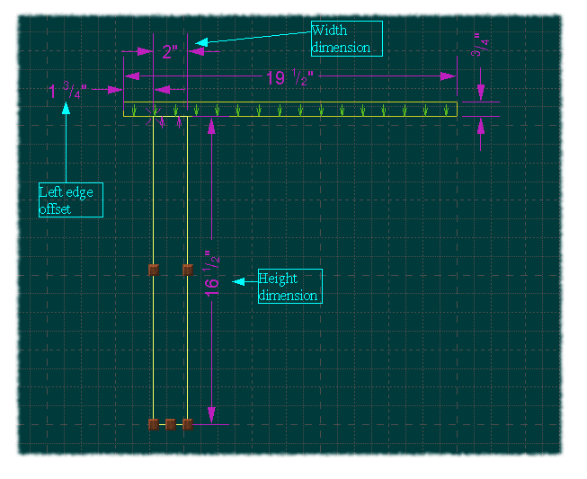
Again, very simple, but there are a few
observations to make:
The top edge of the leg is now
coincident with the bottom edge of the
top. This is indicated by the row of green and magenta arrows. The
magenta arrows point to the primary edge (that is, the edge which is
constrained; namely, the top edge of the leg); the green arrows
point to the secondary edge (that is, the edge to which the primary
edge is constrained; namely, the bottom edge of the top). This
constraint has the effect that what ever position the bottom edge of
the top has, so too will the top edge of the leg.
The left edge of the leg is now
offset from the left edge of the top. (In
the program, this is called an offset constraint.) If you hover the
mouse over the dimension, you will see that it, too, has a magenta
arrow and a green arrow. As in the coincident constraint, the
magenta arrow points to the primary edge and the green arrow points
to the secondary edge. In this case, if the left edge of the top is
moved, the left edge of the leg will move along with, always
separated by the dimensioned offset.
There are no resize handles along
the top edge of the leg. Once an edge is made coincident, it is not
possible to move it independently of its secondary reference. (Note
that there is an option to delete constraints if necessary.)
When you created the left leg, you
probably ended up with some overlap between the offset dimension and
the width dimension. You can modify the position of the dimension
line by activating the dimension, and then dragging it. In the case
of the figure above, the 2” width dimension was adjusted to a
higher position than it initially had. You also have some additional
control over the dimension positioning. In the dimension information
and rectangle information dialogs, you can choose the side of the
reference on which the dimension is to appear. In the case of
rectangles, the width dimension can appear above or below the
rectangle and the height dimension can appear either to the left or
to the right of the rectangle. An individual dimension can also
appear above or below its references.
Complete the left leg by bringing up
the rectangle information dialog and naming the rectangle Left
Leg, setting its size to 1 ½”
by 26”and shifting the width dimension to the Below
position. Double click on the offset dimension and set its size to
1 ¾” and the Below
position.
To create the right leg, we could
follow the same procedure, but instead, we'll take a slightly
different tack. First, create a rectangle in roughly the position of
the right leg. Don't try to create the coincident constraint when you
create the rectangle; that is, make sure the bottom edge of the top
is not highlighted when you press the mouse
button to start the rectangle. Next, we will create the coincident
constraint by grabbing the top resize handle of the right leg (i.e.,
position the mouse cursor over the handle so that it becomes the
vertical resize shape and pressing the left mouse button). Holding
down the mouse button, move the mouse until the cursor is over the
bottom edge of the top. The bottom edge of the top will highlight
when the mouse is in the right place. As you drag the mouse, the
right leg rectangle will resize itself; however, when you release the
mouse button, the right leg rectangle will snap to the bottom edge of
the top and a coincident constraint will be created. Note the order
of this operation: the dragged edge becomes the primary constraint
object and the highlighted edge becomes the secondary constraint
object.
To create the offset from the right
edge of the top, select the menu option Tools|Dimension.
The mouse cursor will become the create dimension shape (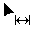).
Start by highlighting and clicking on the right edge of the right leg
rectangle. The cursor will then become the “add another edge”
shape, (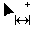).
Now highlight and click on the right edge of the top.
Complete the right leg by bringing up
the rectangle information dialog and naming the rectangle Right
Leg, setting its size to 1 ½”
by 26” and shifting the width dimension to the Below
position. Double click on the offset dimension and set its size to
1 ¾” and the Below
position.
The last piece of geometry we will add
to our elevation view is a skirt. What are the criteria for the
skirt? It should be flush with the bottom of the top and the inside
edges of both legs. We could make the appropriate constraints as the
rectangle is constructed or by dragging its edges afterwards;
however, we take another slightly different tack again. Create a
rectangle under the top and between the left and right leg but
without coincident constraints. Pick the menu option Tools|Alignment;
the mouse cursor will become the create alignment shape ().
Highlight the left edge of the skirt and click the mouse button. The
cursor will become the “add another edge” shape ().
Click on the right edge of the left leg and lignumCAD
will create a coincident constraint between the left edge of the
skirt and the right edge of the left leg. Do similar actions to
constrain the top edge of the skirt to the bottom edge of the top and
the right edge of the skirt to the left edge of the right leg. Open
the rectangle information dialog for the skirt rectangle and name it
Skirt
and set its height to 5 ½”. Also, adjust the height
dimension so that it is “inside” the skirt. Your
elevation view should now look like the figure below (with the skirt
activated).
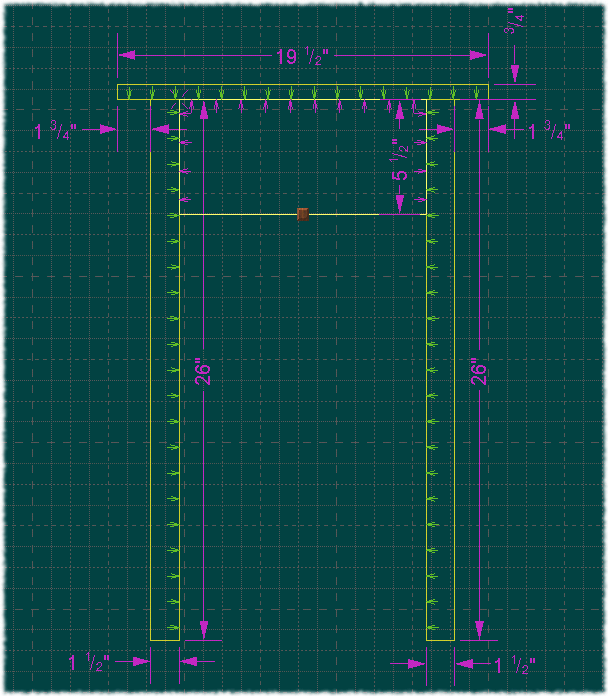
This could complete our work on the
table sketches, however, there are a few aspects which are not
optimal. For example, ordinarily, we would expect both table legs to
be the same length. As we created the legs, we explicitly assigned
the same length to both leg rectangles. However, if we wanted to
change the height of the table, we would have to remember to change
the height of both legs. While this is obvious for this simple model,
its easy to create a model where it's not so clear. As a first
attempt to repair this deficiency, could simply align the bottom of
one leg to the other. So, for example, activate the right leg, grab
the resize handle in the middle of the bottom edge and move the mouse
so that the cursor highlights the bottom edge of the left leg. Note
that nothing will change (substantially) on the right leg until you
release the mouse. At that point, the height dimension of the right
leg will disappear and the bottom edge will be made coincident with
the bottom of the left leg.
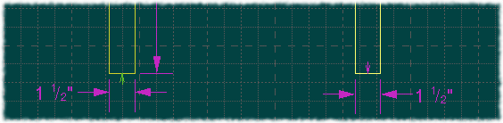
Now there is only one dimension which
controls the length of the legs. For example, change the height of
the left leg to 23” and both legs will be shortened.
While this arrangement is more
convenient, it is still not exactly what we want. What is really of
interest is the height of the table itself, not the length of the
legs. Thus, what we need is an indirect way to specify the length of
the legs relative to the overall height of the table. This is purpose
of reference lines.
To introduce reference lines, we will create a
“floor” for the sketch. Select the Tools|Reference
Line menu option. The cursor will become the create
reference line cursor ().
Move the mouse to just below the bottom edge of the legs and press
the mouse button but don't release it just yet. If you drag the
mouse a short distance, you will see that it becomes the rotation
cursor ().
Reference lines can be either horizontal or vertical; drag the mouse
up and down and left and right to see the different orientations of
the reference line. Release the mouse button when the reference line
is horizontal. (The default is to create horizontal reference lines,
so really all you have to do is click and release the left mouse
button.) Double click on the reference line to bring up its
information dialog and rename the reference line to Floor.
Before we create the constraints from the legs to
the “floor,” we need to delete the coincident constraint
between the bottom of the right leg and the bottom of the left leg.
Select the Tools|Delete
Constraint menu option; the cursor becomes the delete
constraint cursor ().
Highlight the bottom edge of the right leg and click the left mouse
button. The coincident constraint will be removed.
Next, drag the bottom edges of both legs to be
coincident with the “floor.” Then, create a dimension
from the top edge of the top to
the floor (i.e., select Tools|Dimension,
and then pick the top edge of the top and then pick the reference
line). Set the height of the table to 27”. Our front elevation
should now look like the following figure.
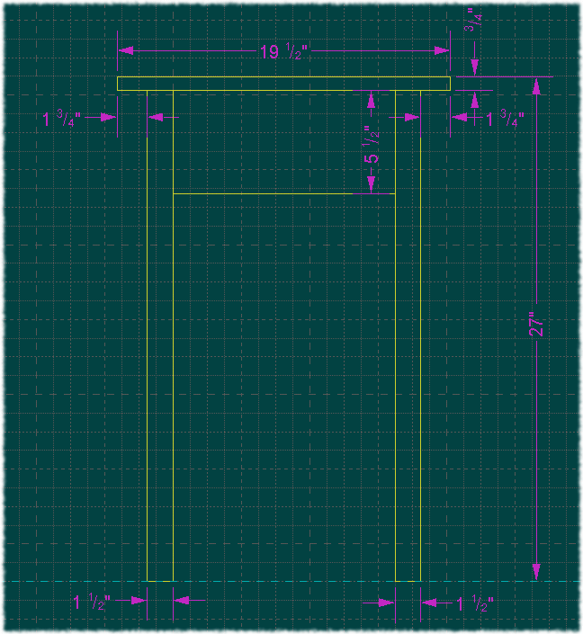
Consider that aesthetics generally favors symmetry
in a design (as a counter-example, perhaps, see
www.nakashimafoundation.org).
In order to describe symmetry, lignumCAD
supports a centerline notation.
Select the Tools|Centerline
menu option and the mouse cursor becomes the centerline cursor ().
Click somewhere between the vertical edges of the top to create a
vertical centerline. (Note that you can rotate a centerline like a
reference line if you want a horizontal centerline.) Next you want to
create a centered constraint. You do this
by selecting Tools|Dimension
and clicking first on the centerline. Now you need to select two
edges to be centered about the centerline. Select the two vertical
edges of the top. Your page should now look like the figure below.
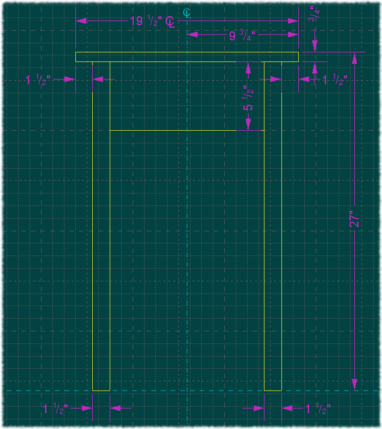
(When you create a centered constraint,
the dimension lines tend to be jumbled somewhat together. If you grab
a dimension by its value (i.e., by the number text), you can drag the
value from side to side as well as up and down.)
Now, you can adjust either the width or
the half-width of the top and the entire table will remain centered
on the centerline. Note that this is not especially meaningful for
such a simple model; however, centerlines do become more useful in
complicated models.
As the last step of creating the Sketches, we want
to print our work. Indeed, if the project is very simple, this may be
all that we really need to do. Before printing, however, we need to
set up some configuration information. Select the menu option
Edit|Preferences;
this will invoke the application default preferences dialog.
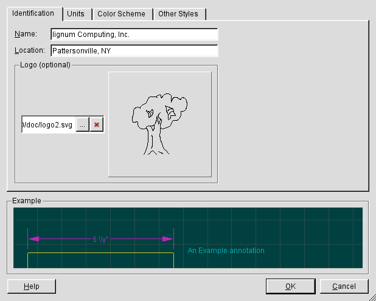
Under the Identification
tab, fill in the Name
and Location
fields with suitable values for yourself. Note that for the logo,
which is optional, you can use either a raster image file or a
Scalable Vector Graphics (SVG) file as the logo. Both types of files
will be scaled to fit in a box along with the name and location
information. Click OK
to apply the changes and exit the dialog.
Next, select the File|Print
menu option. The exact dialog that appears is system dependent, but
you can usually select the printer and paper size. Note that your
pages are printed exactly at the scale and position each page has in
the user interface. In particular, the absolute spatial position of
the lower left corner of the screen is the position of the lower left
corner of the printed image. [Eventually there will be a print
preview so you can see exactly what will be printed and where.]
Here is an example of the second page our
notebook.
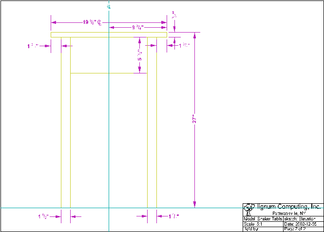
(Note that this image is actually from the
Enhanced MetaFile (EMF) generated from the File|Export
menu option.)